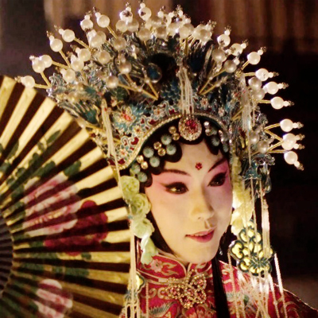

Opera- Gui Fei Zui Jiu |
|
|
Emperor Yang first day and about to order the banquet flowers Pavilion, with the flowers to drink. To the next day, Yang then went to flowers Pavilion first, get ready royal feast waiting ride, what means to be moved later, the Emperor driving them to Jingbu. Years later, and no later than the years. Fortunately, the emperor had been Jiang Fei Hu Bao Gong, Yang heard the news, upset mortals Sugar Lee. Yang jealous of the cramped, especially pro-wave, and women apart in the Yuan Wang, the most prone to reactivity. This script mainly describes Yang Yuhuan drunk from the mentality of reward Huaichun, performing obscene, vulgar style. 50 years of the 20th century, Mei Lanfang last proven refined, starting from the character emotional changes, from an aesthetic point of view to correct its non-artistic tendencies. Play, Yang Yuhuan drinking and drink from the cover sleeve to the free and drink, Mei Lanfang to shape the changes to the performance of this action out of favor Royal depressed from the heart, strong for the state to not be made from, the process of psychological change intoxicated gaffe. |
 |